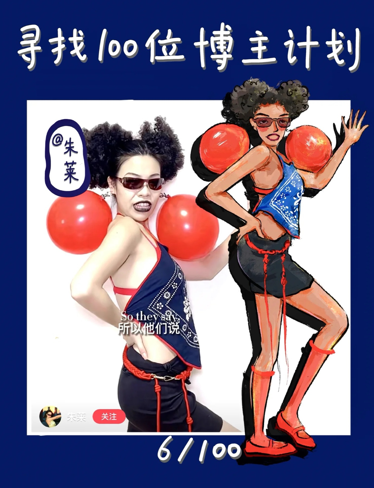
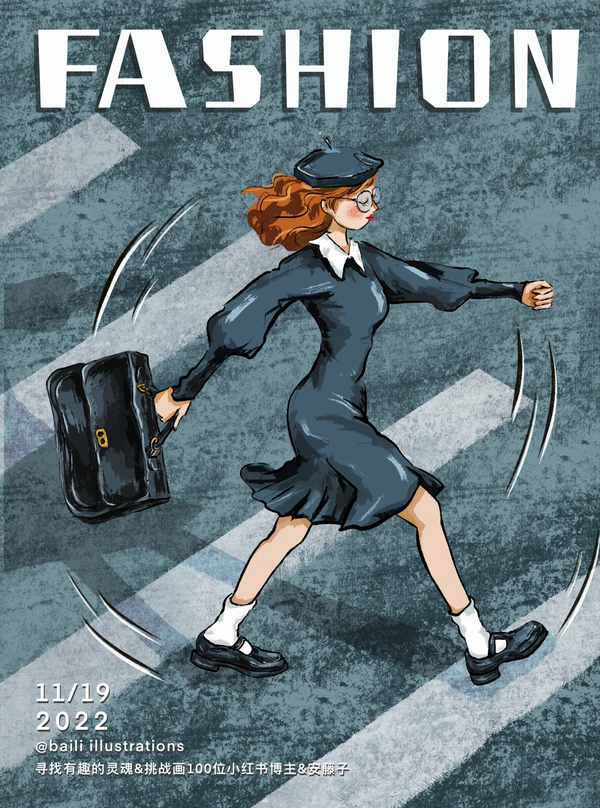
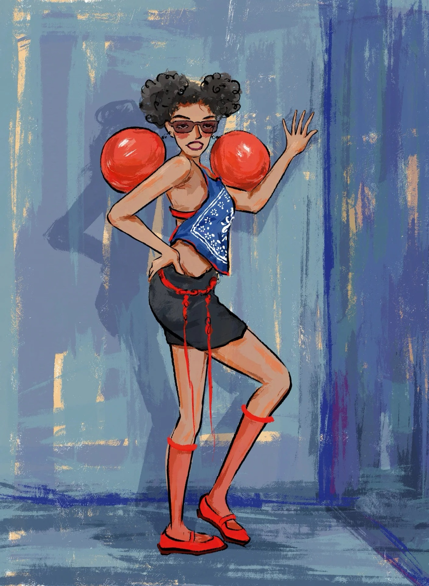
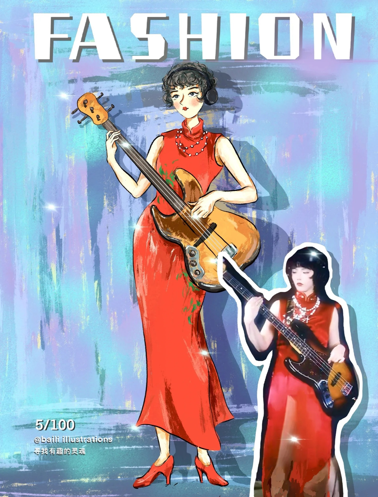
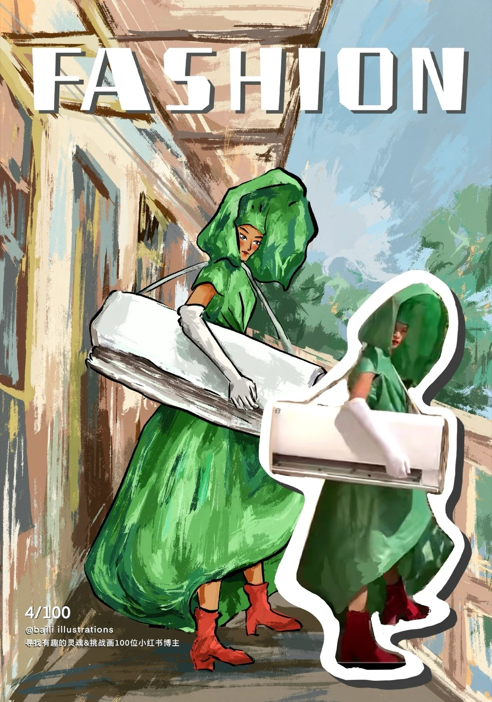
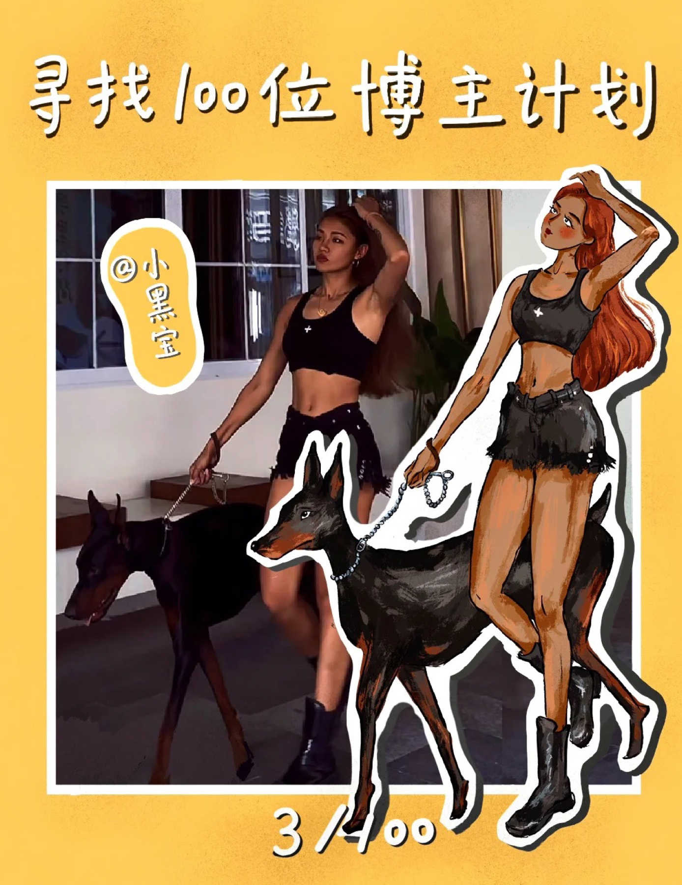
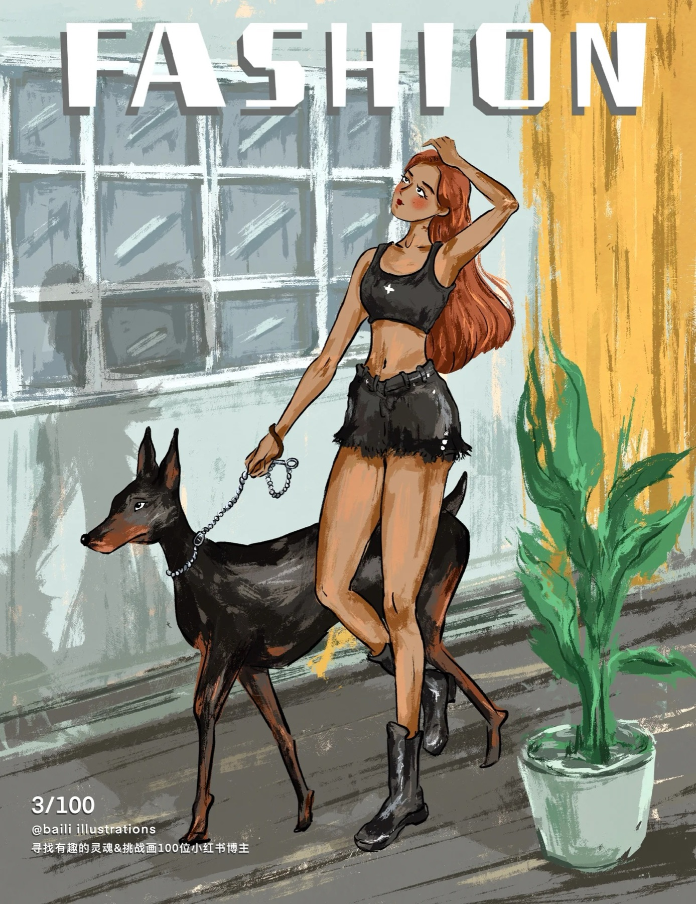
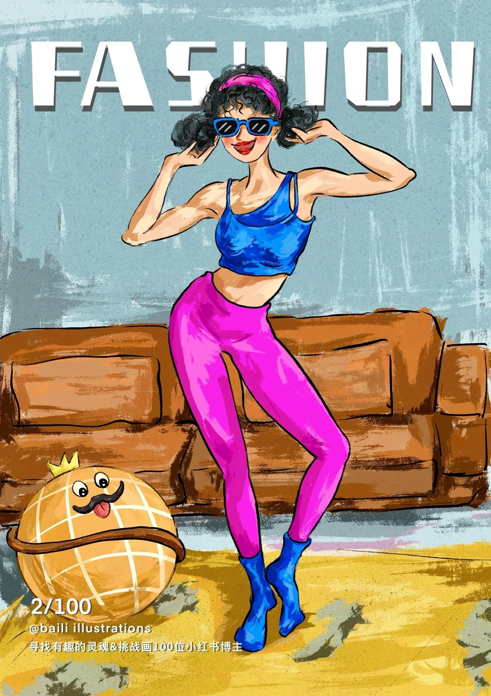
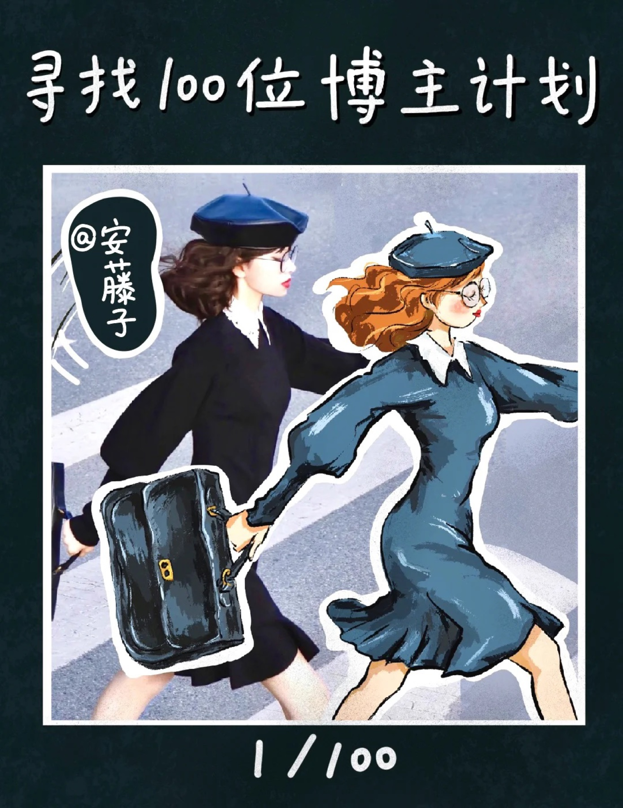
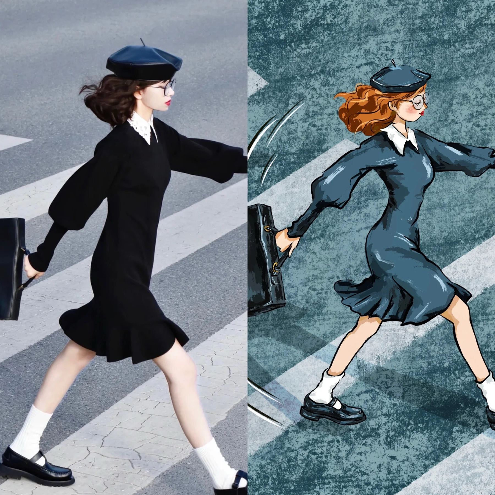

FASHION BLOGGER / 01
ART GALLERY / FASHION BLOGGER
人物、衣着、姿态和生活方式构成这一组插画的节奏。每张画面都像一个被捕捉下来的穿搭瞬间。


FASHION BLOGGER / 01

FASHION BLOGGER / 02

FASHION BLOGGER / 03

FASHION BLOGGER / 04

FASHION BLOGGER / 05

FASHION BLOGGER / 06

FASHION BLOGGER / 07

FASHION BLOGGER / 08

FASHION BLOGGER / 09
FASHION BLOGGER / 10